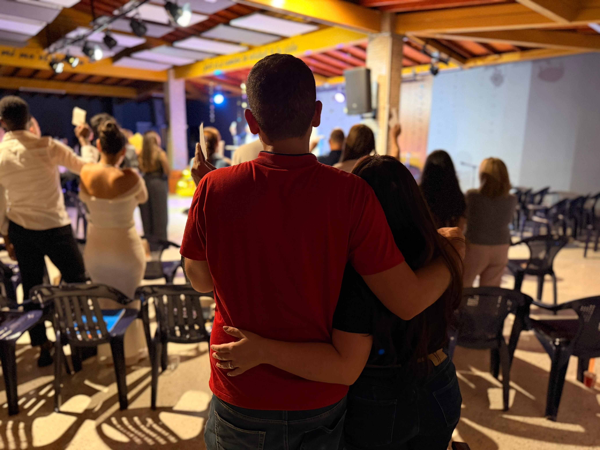
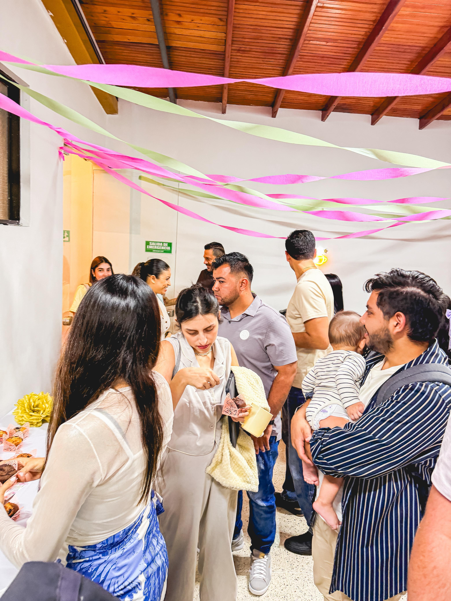
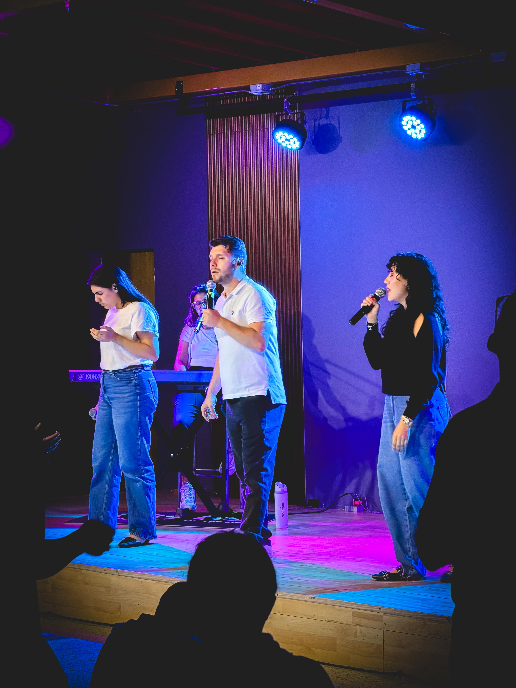
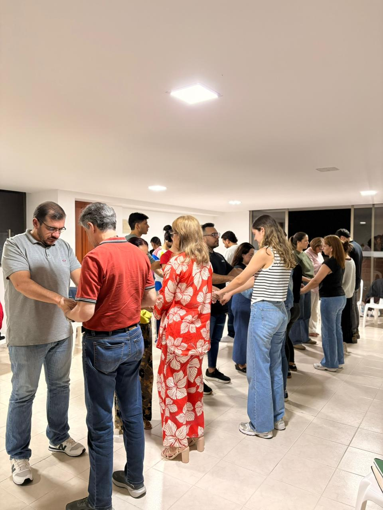
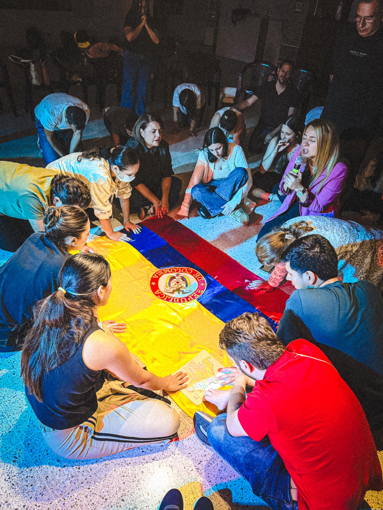
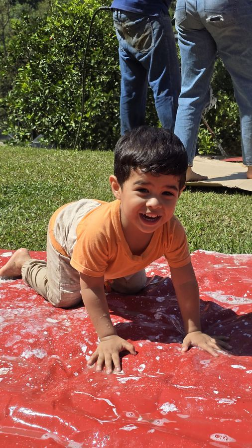

¡Más que una iglesia, somos familia!







En IGR vivirás un espacio lleno de amor, familia y la presencia del Espíritu Santo, donde Él guía todo lo que hacemos y la restauración es una realidad. Aquí encontrarás una fe que se vive y una familia que te acompaña. ¡Más que una iglesia, somos una familia!






Casados hace más de 24 años y padres de tres hijos, encontraron su propósito en Jesús en 2014. Desde entonces, todo cambió. En 2015, atravesaron la pérdida de su hijo mayor. En medio del dolor, tuvieron un encuentro real y profundo con el Espíritu Santo que transformó su vida para siempre. Ese momento encendió una pasión: llevar restauración a los corazones heridos.
En 2018, respondieron al llamado y fundaron la Iglesia Global de Restauración. Hoy, junto a su familia y una comunidad en crecimiento, dedican su vida a ver vidas transformadas, familias restauradas y líderes levantados en Jesús.
Ps. Roberto y Sandra Betancur
Pastores Fundadores
Un millón de almas impactadas y restauradas en su diseño original.

Rol
Rol
Recibe actualizaciones semanales, devocionales inspiradores
y noticias de la comunidad directamente en tu correo